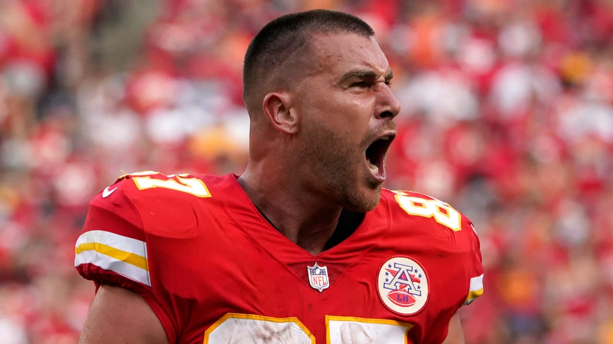

I don't think I've ever seen a fantasy player as consistent as Travis Kelce is for his position.
The man won me the championship as I think a rookie or second year player when I had him for pennies on the dollar. That was 2014. Since then, he's been getting better every year.
I remember reading about him trying to find a FA tight end. They said, "He's the only tight end you'll see teams manufacture touches for in the screen game, and his nickname is Zeus because he's lightning fast and godlike" or something like that. I was like... you had me at TE screens.
Last year, not only did he set the TE record for yards, but he also outgained every single wide receiver not named Stefon Diggs. Let that sink in. He's a hall of famer at this point, and making a case for the best TE ever, although, Gronk is somehow still here and actually has outscored Kelce in their last two games if you count the Super bowl.
Members in the Fantasy League of Extraordinary gentlemen have asked that I show some respect on their name and I will. I didn't have the balls to pick Kelce or Hill at 3. But dammit, have you ever seen more of a 2 man show? It's literally Hill or Kelce on like 90% of their plays, and it's completely unstoppable. I've never seen anything like it. The way Hill gets behind a defense is unique. And the way Kelce finds the open zone is also unique. Did I mention Mahomes is unique?Without further ado, I present to you the power rankings for week 2.
You know the drill, players I love and hate are highlighted and described. Let's go.
JK Dobbins torn acl? No problem, I took 3 top RB's in a row to start the draft so I can absorb a catastophic injury.
My team is ranked last before the season because computers cannot quantify it. Is AB washed? Is Gronk Washed? Is Tom Brady too old to get them the ball? Are Devonta Smith and Jaylen Waddle really ready to contribute right away? Is Kyler's slump from last year injury related, and he'll be good again to start the year? Will Jameis winston be able to support the Saints offense enough for Alvin Kamara to still find the endzone? All of these questions were answered with a resounding yes.
My ability to turn a Odell Beckahm Jr. last second sit, into a Jaylen Waddle 17 points, and my ability to turn a JK Dobbins ACL tear into Devonta Smith's 19 points are why I rank my team #1. I have Michael Thomas and Odell Beckham Jr. waiting in the wings, and AB and Gronk look like their old selves, and please go watch the Kyler Murray highlights, they're insane.
Even when I had my RB1 and RB2, I took an early 3rd to absorb an injury. And even when I had my WR1 WR2 and WR3 I immediately took a deadly 4 and 5 of Smith and Waddle.
And the real secret to how my team gets an advantage, I don't have any early round receivers clogging my starters up. If you look at most fantasy managers' benches you'll see wide receivers going off. I get to start those. AB on my team is infinitely more valuable than AB on Devin Kazmer's team for example, because he'd have to bench McLaurin or something. With me, AB starting is optimal. Gronk being good is again much more valuable to my team than it would be to a team that spent early draft capital on a TE and has to bench that TE for Gronk.
I think the Murray and Kamara combo is going to be devestating.
Enie's team has Nick Chubb. Nick Chubb isn't about flash. He's about production. If there is a flaw in his game, it's that he fumbles in big moments of big games, and he's a little bit like Derrick Henry where you feel like your banging your head against a brick wall until he suddenly breaks loose and it's all worth it.
He also has Kelce and Russ which are impact players. The rest of his draft was better than I expected.
I think Melvin Gordon is on this team too. Where was Brandon Aiyuk today? Looks like it was all Debo Samuel and man did he deliver, even though he almost fumbled a 28 point lead away to the lions. This team beat me so I have to put it right behind me. The reason why I'm putting myself ahead is that they weren't really trying to use Alvin Kamara in a 30 point blowout.
Cooper Kupp continues to suprise me, and looks to be ready for a great year. Russell Wilson is just magical.
Deandre Swift looks great and Goff looks competent enough to support a decent offense. I am pleasantly suprised with Jalen Hurts and how he looked playing quarterback. His rushing ability really is an unfair advantage, especially where he was drafted. Maybe it was just because of Atlanta, but we'll see. Do you realize Atlanta being up 28-3 in the superbowl... Tom Brady decided not only to come back and win the game but to destroy their entire franchise? For a moment, when Tevin coleman scored a TD to open the second half of the "blowout"... for a moment it looked like they were the class of the NFL. Since then, they have done nothing but disappoint, self-destruct, fire their coach and trade their best player. That Tom Brady is evil.
Diantae Johnson gets injured and the gets back up and catches a touchdown in seemingly every game he plays. Wild player.
Devon's team is razor sharp
Keenan Allen looks good. Eckeler still sucks though.
Darnell Mooney
Alexander Mattison
Chris's team... zeke is on a good offense, but is he good?
Still A great team. Seems like Chris has a case of bad luck.
Devin's team went WR WR WR and still managed to snag his boy Miles Sanders. Unfortunately it doesn't seem to be working so far.
Herbert might be better to start the year but I think Burrow has far superior weapons
Disappointing week 1 but still a dangerous team. I think on paper this team is better than devins team last year when he won the ship, so be careful.
Andrew's team is 0-1, but defintely the strongest 0-1 team.
This team is dangerous and well constructed. I think Harris will emerge eventually as a good option, but taking him early was defintely risky.
Sven's team has incredible talent
This team will rebound when Aiyuk gets up to full speed and when the Titans aren't getting their faces blown off by Kyler Murray.
On the bright side, the Stafford experiment appears to be working
Do not underestimate Sven in any game. He has a unique ability to compete with the best of them in unconventional ways, as if to prove a point, kind of like me. Like in Halo he will stick you in the face just because he can, and you still die so it's hard to argue.
Trevor's team has ridiculous upside
I was wrong about Cooper. I was wrong about everything. Trevor is locked and loaded with some players and other players need replacing... (cough cough Ronald Jones).. but make no mistake, the commish will find a suitable replacement by the time you can finish saying Lamar Jackson.
Stafford looks good. The Gus Edwards ACL tear really put this team in a tough spot at RB2, but Trev got the win cuz he's Trev, ya dig? nuff said.
Justin's team has Justin Jefferson and Christian Mccaffery. Having 2 game changing players is really all you need to make the playoffs in fantasy. Look at Ernie last year with Kyler Murray and Derrick Henry.
The thing I don't like about Justin's team is Ryan Tannehil. I think Tannehil will be good with Julio, but the whole point of taking Tannehil is taking him late, and he took him early, erasing the value he could have got at the quarterback position, without elite rushing or passing upside. Sure enough, he sucked week 1.
Montgomery looked great. Only reason I took CEH over him is I can't bear the sight of Andy Dalton at QB. If they hand the keys completely to fields, I might offer him a trade straight up CEH For Montgomery... and he'll probably decline. As explosive as KC is, they don't need Edwards-Helaire. The Bears live off of Montgomery right now.
I really think this team should have gone Trey Lance or Justin Fields or someone exciting at QB to replace Tannehil.
It's an okay team. I've seen a lot worse... speaking of which...
Tim's team is difficult to manage. Every week he's staring down benching either Theilen or Robinson. I told him before the season to trade Robinson and start Theilen. He didn't listen. And to think I helped him move his couch!
Saquon, saquon, saquon. I just don't see a world where he's good in fantasy this year. Daniel Jones is just so bad. Can you imagine having that as your franchise qb? It's embarassing... It's like they're not even trying. With Eli, you couldn't just sell out against Barkley, or he'd hit Beckham over the top. Not the case anymore. Avoid this team like the plague. Sterling Shepherd looked pretty good though.
There's something I'm calling power rankings inertia. It takes time and energy for me to move things around so you have to really suck to move down and really do awesome to move up. Sorry but that's just the way the world works. Life isn't fair. Life isn't half point. It's full PPR and you're always playing against Alvin Kamara.
-PEACE!
Last thing I forgot to mention, it seems like Aaron Rodgers just doesn't want to be out there. The saints fuck a lot of teams up, like the Bucs last year, and these teams can bounce back to win it all, but I'm getting bad vibes out of Green Bay, with all the preseason drama. It seems like Aaron Rodgers pulled a rabbit out of a hat last year, and this year, he's probably got one left, but he looks like he doesn't even want to try anymore. He looks like he wants to change teams or retire.
CHARLIE - next time don't get cute in the beginning of the draft. When you have a tactical nuke available like Deandre Hopkins, only a fool doesn't press right on the D-pad to call it in, and instead grabs Ridley. You missed out on 40 from Hill, and multiple daggers from Hopkins. I feel sorry for you. The END!
Michael -- Eckeler over... just to recap... over NICK CHUBB TYREEK HILL TRAVIS KELCE JONATHAN TAYLOR DEANDRE HOPKINS OMG the list just keeps going and going and going...Thank you for using your laptop